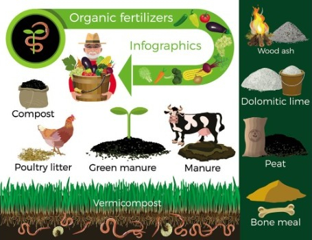

Nowadays, as the level of modernization of agriculture is getting higher and higher, sustainable agriculture is an important global issue. Organic food is receiving more and more attention.According to the trend, organic fertilizers are becoming the first choice for many people. Widely used for vegetables (tomatoes, lettuce, cucumber), fruits (strawberries, grapes, citrus), Cash crops
Organic Fertilizer refers to compost made from animal waste or animal and plant residues that are rich in natural by-products. For example, guano, dried and powdered blood, ground bone, crushed shells, finely pulverized fish, phosphate rock, and wood.The nutrient elements contained in organic fertilizer are mostly inorganic state, so it is difficult for crops to use them directly. Through the action of microorganisms, a variety of nutrient elements are released slowly to provide nutrients to plants continuously.
Organic Fertilizers are different types of fertilizers derived from vegetable matter, mineral matter, animal matter, etc. Here are some of the most common kinds of organic fertilizers:
Bone meal is made from crushed animal bones. It’s rich in phosphorus and calcium and supplies some nitrogen. It can promote plant seedling growth, help flowers grow, and increase yield.
A blood meal is a dried form of animal blood. It can improve the nitrogen content in the soil and makes the plants denser. Release nitrogen quickly promotes flowering and acts as a natural pest repellent.
But usage and application should be done sparingly, as over-application can contribute to the burning of the plant root.
It can come from a variety of animals. For example, cow manure can control weeds and increases the moisture-holding capacity of the soil and increases air penetration in the soil.
Seabird guano is an organic fertilizer for lawns. It can act as a natural fungicide and control nematodes in the soil.
Fish meal is a fast-release fertilizer that is a rich source of organic nitrogen, phosphorus, and calcium. It can improve soil health, increase fertility, and make plants thrive.
This blend of finely ground, decomposed fish delivers a big dose of nitrogen. Acts as a soil conditioner. But be careful. Fish Emulsion is highly acidic, and overuse can burn plants.
Shellfish are made from the broken shells or bones of shellfish and crabs.
Shellfish organic fertilizers are rich in calcium and also contain significant amounts of phosphorus and other trace minerals.
That means it can help spur flowering and robust root growth. Also, it has chitin, which inhibits the growth of some pests.
Compost is rich in nutrients and can be used as an excellent soil improver to promote organic matter and soil fertility.
It provides rich growth nutrition for plants, which can retain water in the soil for a long time.
Cottonseed Meal is a rich source of nitrogen and a small amount of phosphorus and potassium. It can be an excellent organic fertilizer grass.
It is mainly used to cover the garden soil to regulate the soil environment.
It contains nitrogen, phosphorus, and neutral pH.
Soybean meal is a functional additive for longer-lasting results during soil maintenance.
Seaweed is an immediate-release fertilizer and an excellent source for zinc and iron. It goes well with the high-potash crop.
Greensand is an olive-green sandstone containing glauconite. It is a rich source of iron, potassium, and magnesium.
It aids in the stimulation of flowering and fruition in fruit trees. And loosen the soil, increase the water content in the soil to improve the rhizosphere.
Phosphate is extracted from mineral rocks and clay.
It has over 30% phosphate, together with high concentrations of trace micronutrients. It can be used to increase soil acidity and promote plant seedling growth.